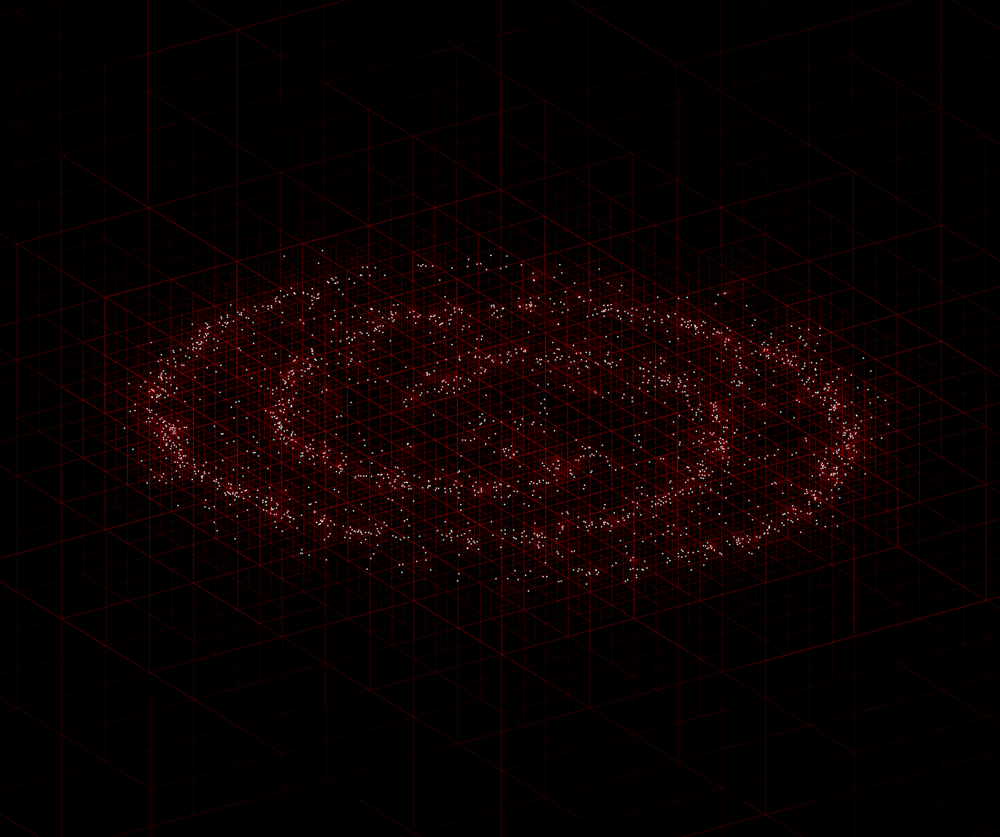

NBT
NBT is a simple N-body test in C++ using the Barnes-Hut tree algorithm for efficient force calculations. It serves as a basic implementation to explore realtime gravitational interactions in astrophysical systems and can be used for educational purposes or as a starting point for more complex simulations.
